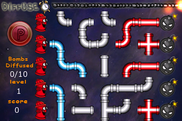

<section class="Featured">
    <div class="Frame FLC">

        <header>
            <h1>Diffuse</h1>
        </header>

        

        <div class="description">
            <p>In this time-based puzzler, users attempt to complete puzzles and diffuse as many bombs as possible before the master fuse runs out.   The puzzles are a series of misplaced water pipes running from fire hydrants to the bombs. Line up the pipes correctly for the water to diffuse each bomb.  Complete the puzzles for the level before the fuse runs out and move onto he next level.  Warning:  Addicting content.</p>
        </div>

    </div>
</section>
